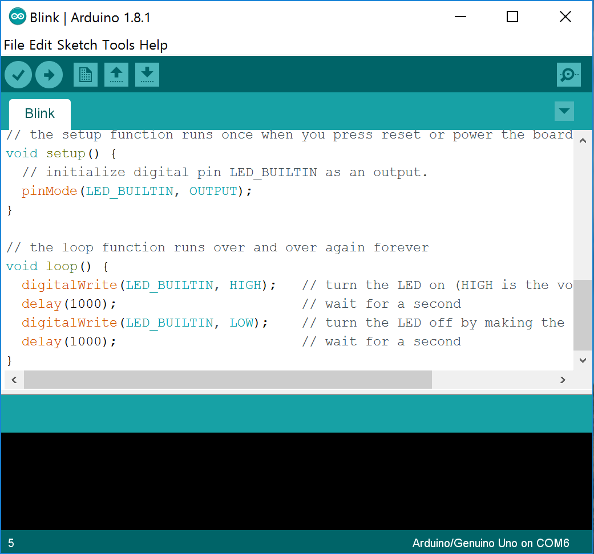
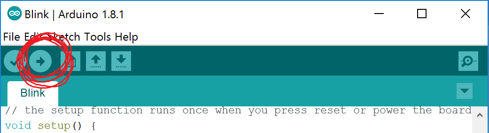
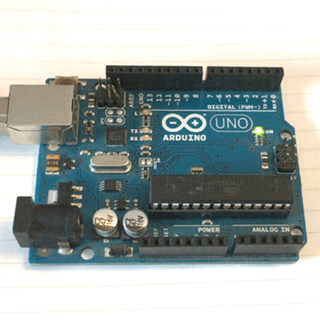

Learning to Program Microcontrollers with Arduino
Stuff You Need
- A computer, plus the admin password to install software
- An Arduino Uno R3
- A USB cable with the right ends to connect the Arduino to the computer
If you need to buy an Arduino or USB cable, I'd recommend Adafruit in New York as the best choice: Arduino Uno R3 and USB cable.
Software check
Before you can actually make an Arduino do anything, you have to install the Arduino program. It's actually three programs in one:
- A text editor, for typing code
- A compiler, which translates your code into 1's and 0's for the Arduino
- A USB loader, which loads the 1's and 0's onto the Arduino through the USB cable
To install the Arduino software, download the installer from the Arduino website. (There is also a web-based version, but it doesn't work reliably yet, as of February 2017.)
You're on your own for the actual installation, but it consists of pressing "OK" and "Next" and things like that a few times. Search the internet for advice if you get stuck. Your goal is to see something like the image below on your screen, except not just a screenshot in your browser window like this one.
Hardware check
The next step is to plug in your Arduino with the USB cable. When you plug it in, you should see a green light on the board light up, showing that the Arduino is getting electricity. Depending on how your Arduino was manufactured or last used, some of the yellow lights on the board might also light up. That's okay.
Once the board powers up, it's time to load new code on it. In the Arduino program, select File > Examples > 01.Basics > Blink. This will open a file containing a short program that blinks the yellow LED labeled "L" on the Arduino in a 1 second on, 1 second off pattern forever (or until you load a new program).
To compile the program and load it onto the Arduino, click the upload button, which is circled in the screenshot below. (If you hover over a button with the mouse pointer, the function of the button appears in the top bar.)
When you click upload, you see some messages at the bottom of the Arduino window. If everything works properly, you should see the following messages in order:
- "Compiling sketch..."
- "Uploading..."
- "Done uploading."
As the code is uploaded, you'll see the yellow lights on the board flash rapidly for a second or two. Each flash of the light marked "TX" (which means "transmit", for no compelling reason) is a 1 getting sent to the board; the gaps between flashes are 0's. The flashes on the "RX" pin ("receive") are confirmation packets sent back to the computer.
After the code is loaded, here's what you should see (an Arduino with a flashing yellow light).
If you've made it this far, your hardware and software are working properly. Congratulations! Go get a drink of cool, delicious water!
When stuff goes wrong
The most common problem with Arduinos is difficulty communicating between the computer and the Arduino. You might see messages in the bottom window like this:
avrdude: stk500_recv(): programmer is not responding avrdude: stk500_getsync() attempt 1 of 10: not in sync: resp=0x00 avrdude: stk500_recv(): programmer is not responding avrdude: stk500_getsync() attempt 10 of 10: not in sync: resp=0x00 Problem uploading to board. See http://www.arduino.cc/en/Guide/Troubleshooting#upload for suggestions.
In this case, you should check two settings:
Tools > BoardTools > Port
You can also try unplugging the Arduino and plugging it in again and restarting the Arduino program. As a last resort, you can "see http://www.arduino.cc/en/Guide/Troubleshooting#upload for suggestions"
Conceptual underpinnings
When the Arduino Uno gets electricity, it starts running whatever code is at location 0 of its memory. This is typically an instruction called a "reset vector" that points to the start of a chunk of code called a "bootloader." The bootloader checks to see if a new program is available via the USB port. If it is, it receives the code, writes it into memory, and starts running it. If no code is available, it just runs whatever program it had been given the last time it was programmed. This is how every Arduino works: power up, look for new code; if none, run old code until power cycle.
So, how do I make this "code" you mention?
Start by making a new file in the Arduino program using File > New. You'll see a new file containing the empty skeleton of an Arduino program:
void setup() {
// put your setup code here, to run once:
}
void loop() {
// put your main code here, to run repeatedly:
}
When an Arduino starts executing code (after figuring out whether new code needs to be loaded), it first executes everything inside the setup() function once. Then, it executes the loop() function over and over again forever. Inside each function (setup or loop), the code is executed from left to right and top to bottom, like reading a book.
Okay, but what can I actually write?
This is a hard question. One approach to answering it is to say, "Here are all the rules for what C++ code is valid," but that's not really a very good way to learn the possibilities, and it's also incredibly boring. (If that approach works for you, great! You should first read "The C Programming Language" by Brian Kernighan and Dennis Ritchie, and then move on to Bjarne Stroustrup's "The C++ Programming Language.")
A better approach for those of you who are still here is to learn a few useful functions, and then look up other ones when you need them.
A few exciting functions
More details to be added . . .
digitalWrite()
digitalRead()
analogRead()
analogWrite()
delay()
If you want to check the details of these functions or see what else is available, the canonical reference is the Arduino reference page.
Some useful programming techniques
#defines
First off, anything that starts with a # is called a "preprocessor directive." When you translate your C code into a binary executable file, the first step is a sweep by the preprocessor. It reads the #defines and replaces anything you have defined with your definitions. For example, if you have written #define TOO_MUCH_CHEESE 138, the preprocessor will replace all subsequent occurrences of the phrase TOO_MUCH_CHEESE with the number 138.
This probably seems stupid-- why wouldn't you just write 138 in the first place? Suppose you had written 138 in 22 different places in a long file. Then, you realized that 138 wasn't really all that much cheese, so you decide to bump 138 up to 243. If you were smart enough to use a #define, you only have to change it in one place.
But the fun doesn't stop there! You can also use them to make your code more understandable, which is highly desirable when I'm trying to help you debug your project. For example, if you write if(signal>128), I have no idea what you're doing. If you write if(signal>SENSOR_THRESHOLD), I'll have a good guess of what's happening.
A good rule of thumb is that if you find any numbers other than 1's and 0's below main() you're probably making a mistake.
An interesting thing to think about is what happens if you make one #define depend on another-- does the order matter? (No, but it seems like it does at first. That's why it's "interesting.")
#includes
Writing C++ code is fun, but you probably don't want to write everything yourself. If you want to use some functions that someone else has written, you need to tell your program where to find them.
There are two formats of #includes:
#include <somefunctions.h> #include "somefunctions.h"
You use the for <somefunctions.h> for files of functions that are pre-installed with the compiler. The "somefunctions.h" format is used for any little collections of functions you write and keep in the same directory as your main program. (Actually, these settings can be different on different compilers, and, to be honest, I'm not really even sure that this is the way the Arduino compiler is set up, but that's why there are two formats.)
Comments
Comments are text fragments injected for the sake of humans; the preprocessor strips them out as soon as you give it the file for compilation. For C, the rule is that comments are to be stuck between the symbols /* and */. Since C++ has been developed as an improved version of C, most preprocessors now allow "C++ style comments" which start with // and continue to the end of a line.
Functions
A function is a section of code that takes in some data and spits out some other data. For some functions, one or both chunks of data might not exist. (Why would you want a function that neither takes in nor emits data? Maybe it turns on a solenoid, or launches a rocket.) Here is the structure:
output-data-type NameOfFunction(input-data-type1 variable1, input-data-type2 variable2 . . . ) {
variable-type nameOfSomeInternalVariable;
[ more code ]
return someVariable;
}
By far, the coolest thing about functions is that you can use them to break down complex tasks into simpler ones. Suppose you're building a medical imaging device that uses the Bessel function to compute Hankel transforms. You write a little function that calculates the value of the Bessel function for different numbers. Then you write a little program that tests your function (to be cool, call this little test program a "test harness"). Once you get that function working, you put in a file labeled "bessel.c", include a header called "bessel.h," and you never think about it again. This is significantly different from, say, building a house. You cannot, for example, build a house in the following order: (1) putting up the wallpaper, (2) installing the wiring, and then (3) building the floor, walls, and roof.
The second coolest thing about functions is that the variables used inside them disappear when the function is finished.
Useful Structures
if
Structure:
if(expression) {
statement1;
} else {
statement2;
}
Example:
if(aileronsBroken == BOTH_OF_THEM) {
DiveBombNavyShip();
} else {
FlyToAntarctica();
}
Notes:
- you can leave off the "else" part if you want.
- A very common error is to use = (which assigns a value to a variable) instead of == (which tests one expression against another)
for
Structure:
for(start; test for end; increment) {
statement;
}
Example:
for(i=1; i<=TOTAL_PUMPKINS; i++) {
DetonateThePumpkin();
}
Note: don't forget to declare your counter variable before you use it.
while
Structure:
while(test) {
statement;
}
Example:
while(CherubsSwollen()==FALSE) {
FeedTheCherubs();
}
Note: while(1) is a good way to make an infinite loop.
Other Things That Didn't Really Fit Anywhere Else
Declaring Variables
At the start of any function, you should declare what variables you will use, other than the ones that are given as inputs to the function. Here are two variable types you will need: (1) chars and (2) ints. "Char" is short for "character," and it is allocated one byte in memory. You can fit numbers from 0 to 255 in a char (because one byte is 8 bits, and 2^8-1=255). "Int" is short for "integer," and it gets two bytes. With an int, you can get from 0 up to 65,535.
#ifdef and #endif
Pretty often, you want to test your program in different configurations, or test different parts separately. An easy way to do that is with #ifdef and #endif. If the word after #ifdef appears in the list of #defines in the file (even if the word isn't defined as any particular number), the compiler will include the code between #ifdef and #endif. Otherwise, the compiler will ignore that section of code.
The word "static"
In C++, the word static can be used in at least two different ways. The first way is with variables inside functions. If you add the word static when you declare a variable, that variable will retain its value from the end of one function call to the beginning of the next. If you don't do that, the variable will disappear as soon as the function ends. (In reality, the memory allocated to the variable will be returned to the pool of available memory. The data in the variable might stick around for a little while if you're lucky, but sooner or later, it will be overwritten.)
The second way you can use static is with functions. A static function is one that cannot be called anywhere outside of its own file. In general, you should default to making your functions static, so you don't accidentally call them somewhere else. (Not declaring a function to be static is like leaving your bike unlocked. Probably, nothing will go wrong. But then, after three weeks of everything going great, you get out of class, and your bike is gone. The difference here is that you're the one stealing the bike, but you won't know it.)
Summary:
- static function == private function
- static variable == persistent variable